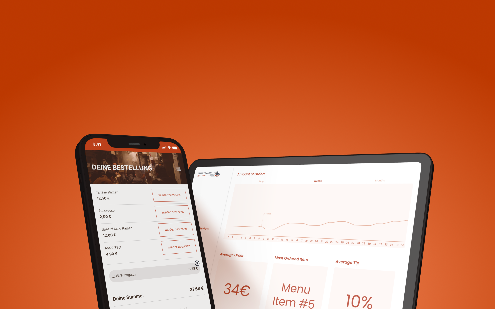
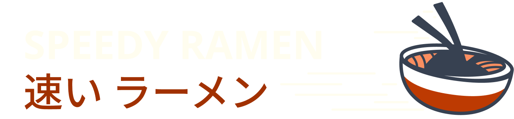
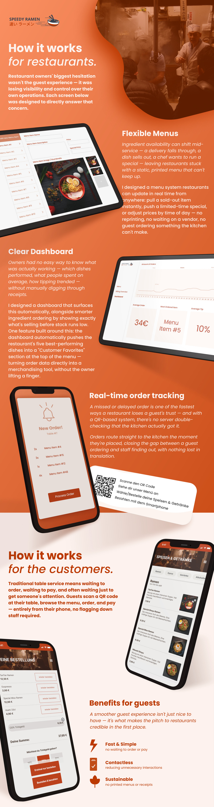

SaaS Ordering SystemAs the sole designer on this project, I owned the concept end-to-end — from initial idea through interaction design, visual design, and prototyping.
I conducted user interviews and usability testing with both diners and restaurant staff to validate the core ordering and management flows before investing further in the concept.
Early competitive research eventually surfaced several well-established players already solving this problem — a discovery that led us to discontinue the project rather than compete in an already crowded space.
Restaurants are hesitant to adopt new ordering tech without proof it won't disrupt service. I designed this landing page to lead with the guest-facing simplicity (scan, order, pay) before addressing the restaurant's operational concerns — building trust before asking for commitment.

Speedy Ramen was a strong lesson in the value of researching the competitive landscape early. The core problem we set out to solve was real, but by the time we validated it through user research, several well-funded competitors had already built mature solutions. It reinforced that user validation and market validation need to happen in parallel, not in sequence.